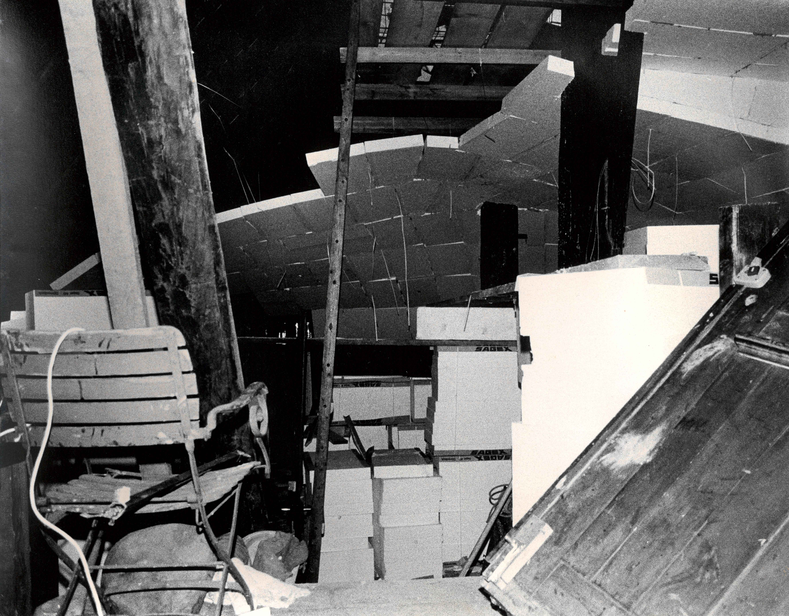

In the Spring of 2023 Kurt tells me about the domes. How he worked with SAGEX© because they are the best for his way of shaping space. He tells me about this as if I should exactly know what he means. “I prefer to work with SAGEX©. It’s a good material to carve it out. Put SAGEX© to the ceiling and carve piece by piece out until you get a dome”, Kurt says. As if this is a very common building technique. That is how he talks and tells stories in general. As if everybody should immediately know what he means. If you don’t get it, you will soon lose his interest in talking to you. That’s what I heard from many people. At least of the ones, who lost his interest. 
Most of the time I pretend to understand. I know enough so I can pretend realistically. I know characteristics of different materials. I can imagine that SAGEX© – usually used for isolation and applied to the facade – is good to carve domes into it. I even can connect his theory of life that he is working on since 40 years to things that I’ve seen before. Latour used similar language in “Down To Earth: Politics in the New Climatic Regime”. There, Bruno Latour writes about a third force, Attractor 3, next to a global and local force. The Attractor 3 should attract all humans, despite their political views. Not that I understood that book. Nor does Kurt read Latour. (It does not seem, as if he reads any theorist’s work). But having seen similar series of words combined, helps me to keep the conversation with Kurt going. A conversation that goes somehow like this:
First was the Nature/Culture division after the Neanderthals. That’s how it still is today. But that’s a one way path. That’s a straight line of progress that will end or crash somewhere. There’s a need for coming back to the origin. Not Nature/Culture but Nature/Me/You/Us. Democracy. 4 Dimensions. A new pole that attracts like a magnet. This is a life cycle that every day starts new. It’s in the sleep when we’re reset back to nature. “Kulturkreislauf”. I have so many questions that I don’t dare to ask Kurt. Most of all:
Where can I see this in your art works? How did you try your theories out in Wangelen? How did you apply the architecture correlating to these theories? But I stopped asking these questions out of fear of losing his interest.
The same questions arise when reading Bruno Latour’s “Down To Earth”. He talks about this Attractor 3 like Kurt talks about the “Kulturkreislauf”. Neither says what it is, though. When I looked into the book to find answers, I saw a pencil note on the side of one page. “In Wangelen?”, it says. Did I write that when I read the book some years ago? The part I marked says the following:
„It is the uprooting that is illegitimate, not the belonging. To belong to a land, to want to stay put and keep on working one’s plot of land, to be attached to it, has become “reactionary,” as we have seen, only by contrast with the headlong flight forward imposed by modernization. If we stop fleeing, what does the desire for attachment look like? The negotiation – the fraternization? – between supporters of the Local and supporters of the Terrestrial has to bear on the importance, the legitimacy, even the necessity of belonging to a land, but – and here lies the whole difficulty – without immediately confusing it with what the Local has added to it: ethnic homogeneity, a focus on patrimony, historicism, nostalgia, inauthentic authenticity.
On the contrary, there is nothing more innovative, nothing more present, subtle, technical, and artificial (in the positive sense of the word), nothing less rustic and rural, nothing more creative, nothing more contemporary than to negotiate landing on some ground.“ (1)
Is it landing on some ground, that was happening in Wangelen?
Where is ground to land on in Zürich? Where can I land? –––––
(1) Bruno Latour, Down to Earth: Politics in the New Climatic Regime (John Wiley & Sons, 2018), Page 65.